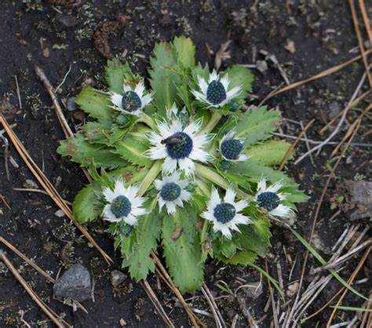

Plantas endemicas
Plantas
Eryngium carlinae

(Cabezona)
Una planta herbácea perenne con espinas y flores de tonalidades blancas, azules y moradas. Se distribuye en ambientes perturbados de la Sierra Madre Occidental y otras regiones de México, siendo utilizada en algunos lugares para tratamientos de malestares urinarios.
Ir al menu